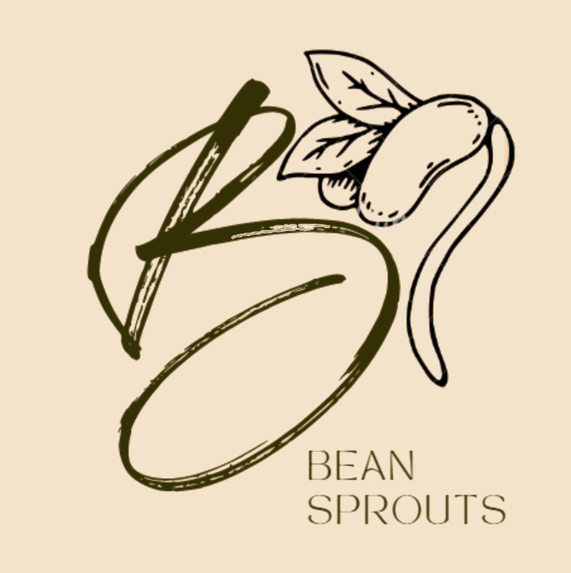
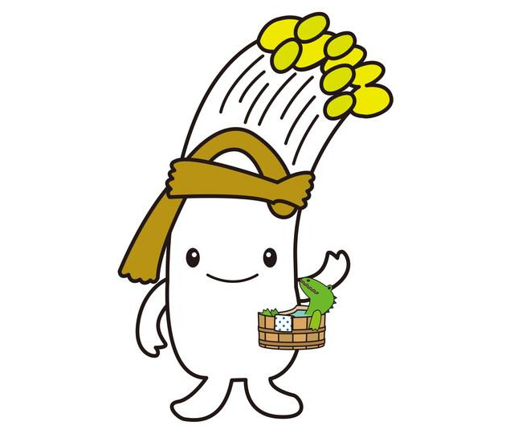
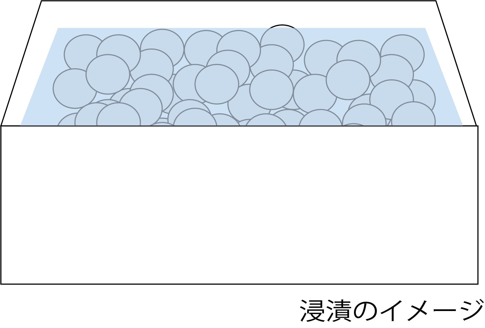
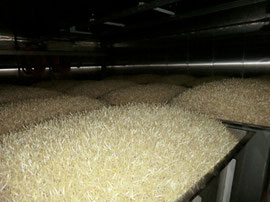
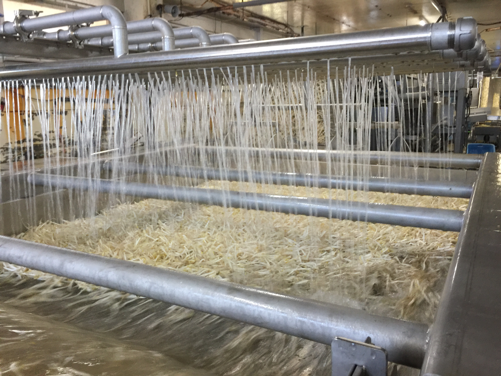
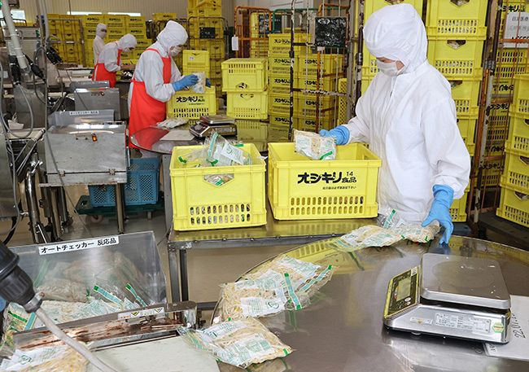
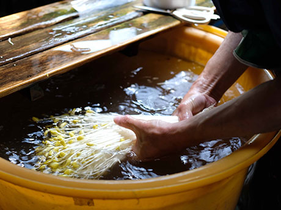
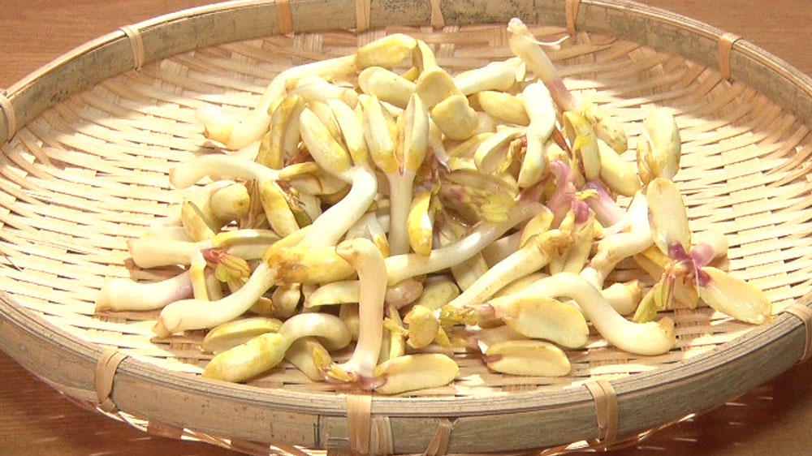

bean sprouts
menu
ホーム
もやしについて
もやしレシピ
農家の現状
▲TOP
もやしについて
目次
もやしの種類
もやしに含まれる栄養素
もやしの生産過程
個性の強い珍しいもやしを紹介！

もやっぴー
もやっぴーは
大鰐町のゆるキャラ
名前の由来は
『もやしを食べてみんなハッピー！』
から。
誕生日は
11月11日
の
『もやしの日』
だよ！
誰が何と言おうと『もやしの日』だよ！
閉じる
知ってた？もやしの種類
緑豆もやし
◯主な生産国
中国、ミャンマー等
◯特徴
国内では約9割を占める。やや太めで癖のない味。
◯主な調理法
炒め物、鍋、ラーメン等
ブラックマッペもやし(黒豆もやし)
◯主な生産国
ミャンマー、タイ等
◯特徴
やや細めで、ほのかな甘味。しっかりした食感が好まれる。
◯主な調理法
ラーメン、焼きそば、お好み焼き、おひたし等
大豆もやし
◯主な生産国
アメリカ、カナダ、中国等
◯特徴
まめが付いたままで食される。独特の味と食感が根強い人気。
◯主な調理法
炒め物、ナムル、スープ等
おいしー・ヘルシー・もやしー
実は、もやしはアスパラギン酸が豊富！
アスパラギン酸は、アスパラギン酸アミノ酸の一つで、
スタミナをつけたり疲労を回復させる効果
があります。
他のどの野菜よりも多くアスパラギン酸が含まれていることが下のグラフで分かるね！
もやしは最強！もやしを食べて疲労回復しよう！
大豆もやし
黒豆もやし
緑豆もやし
きゅうり
ほうれん草
キャベツ
アスパラガス
栄養がたくさん入っている！！
もやしには疲労回復効果を持つアスパラギン酸の他にもカルシウムやビタミンCなど様々な栄養素が含まれているよ！グラフで説明するね！
カルシウム
カルシウムはの
細胞の分裂分化、筋肉収縮、神経興奮の抑制、血液凝固作用の促進
などの効果があるよ。そんなカルシウムが、大豆もやしには
23㎎
、黒豆もやしには
16㎎
、緑豆もやしには
10㎎
含まれているゾ！
大豆もやし
黒豆もやし
緑豆もやし
ビタミンC
ビタミンCは
抗酸化作用による癌の予防・心臓血管系疾患の予防や、免疫力向上による風邪予防、植物性鉄の吸収促進作用
などさまざまな働きがあるよ！
大豆もやしには
5㎎
、黒豆もやしには
10㎎
、緑豆もやしには
8㎎
含まれているんだ！
大豆もやし
黒豆もやし
緑豆もやし
食物繊維
食物繊維は
便秘の予防をはじめとする整腸効果だけでなく、血糖値上昇の抑制、血液中のコレステロール濃度の低下
などの役割を担っているよ！大豆もやしには
2.3g
、黒豆もやしには
1.5g
、緑豆もやしには
1.3g
の食物繊維が入ってるよ！！
大豆もやし
黒豆もやし
緑豆もやし
ビタミンB1
ビタミンB1は
糖質代謝をサポートするビタミン
だよ。炭水化物などの糖質をエネルギーに変えてくれるよ！大豆もやしには
0.09㎎
、黒豆もやしと緑豆もやしには
0.04㎎
含まれているよ！
大豆もやし
黒豆もやし
緑豆もやし
そんな栄養たっぷりなもやしを
たくさん食べて
健康になろう！ダイエットにも
効果抜群！
もやしができるまで
1.浸漬
趣旨を洗浄し、表面殺菌した後、仕込みのコンテナに入れ、発芽促進のため所定の時間、温水に漬け込みます。

2.育成
浸漬が終ったら、温水を抜き、暗室で栽培が始まります。栽培期間中は、あらかじめ設定したプログラムに基づいた環境下で育てられます。栽培には化学肥料を必要としません。

3.洗浄および脱水
こうして育てられたもやしを、豊富な地下水を使って種子の殻を取り除きながら洗浄します。最後に、もやしの表面に付着している水分を除去します。この工程では、もやしの鮮度を維持するため、できるだけ手早く衛生的に処理することと、もやしを傷つけたり折ったりしないよう細心の注意がはらわれています。

4.袋詰め
洗浄、脱水の終ったもやしは、自動的に計量、袋詰めされます。包装されたもやしは、冷蔵車でお客様へ届けられます。

珍しいもやしって知ってる？？
大鰐温泉もやし
青森県の中南地域に位置する大鰐町には、古くから伝わる幻の冬野菜「大鰐温泉もやし」があります。 津軽三代藩主・信義公が大鰐で湯治する際は必ず献上したとされております。 秘伝の大鰐温泉もやしは、 独特の芳香とシャキシャキとした歯触り、味の良さ、品質の高さで人気が高い大鰐町自慢の味です。

ピーナッツもやし
ピーナッツもやしは名前のごとく、ピーナッツのスプラウトです。 茎は茶系の白色で、豆の部分は茶系のクリーム色をしています。 豆もやしのような形状ですが、豆もやしよりかなり太いですよ。 食べ応えのあるシャキシャキ食感なと、ピーナッツ味のような、ほんのり甘みが特長です。
